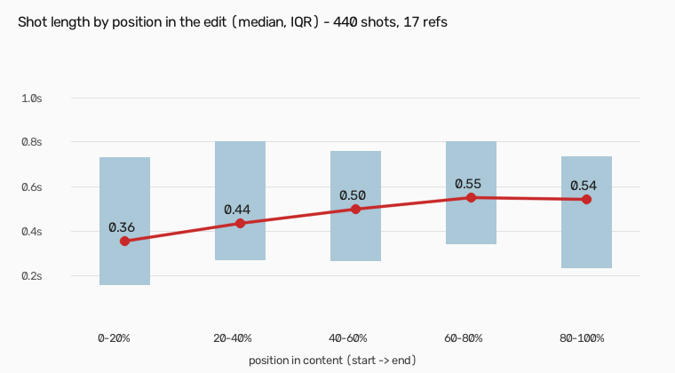
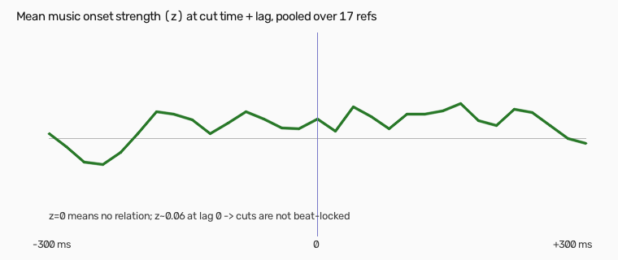

Editing DNA — P_CINE_MONTAGE
status: pending_user_approval generated 2026-10-25 from style_dna.json.
Reference frames are third-party material for analysis only. Images labelled SYNTHETIC are reconstructions.
Summary
Music-driven cinematic travel/city/food montage, no dialogue, ~10-27 s of content. Cold-open burst of very short shots, one big display title (location/topic) in a single accent colour, mostly hard cuts with 1-frame white flashes and whip-blur accents, optional frame-in-frame white card series, warm contrasty film grade, and an edit that decelerates towards a held final shot.


Structure and pacing
Median shot length per fifth of the edit: 0.356 → 0.436 → 0.497 → 0.548 → 0.543 s. front-loaded energy: shortest shots in the first fifth, shots lengthen ~50 % by the end.

Evidence: R04 opens with 11 shots of 0.12 s before the title at 1.29 s; R08 ends on the finished dish; R16/U2 are the calm lower bound.

Transitions
Hard cut is the default. White flash = {'1': 45, '2': 4} frames histogram (1 frame dominates). Whip blur 3-6 (visual estimate from strips). Strips show frames i-3…i+3 around automatically classified cuts.


Typography
Closest verified free matches (OFL): Anton, Archivo (variable width), Bebas Neue. No original title font is confirmed — see gaps.


| variant | refs | font | colour |
|---|---|---|---|
| poster_condensed | R17, R11, R06 | Anton (stretched vertically) | #E70002 |
| heavy_grotesque | R02 | Archivo wght900 wdth88 tracking -0.045em | #AC0A22 |
| tall_condensed_light | R04 | Bebas Neue | #FFFFFF |
| slab_display | R16 | unverified (heavy slab/serif) | #A00004 |
| retro_script | R08 | Lobster-like script with 3-D extrusion (approximation) | |
| depth_title | R03, R07 | title placed BEHIND the subject (needs subject matte) |
White card series
Inset 69 % × 92 % centred on #FDFCFD; 3-6 consecutive shots inside the same card, hard in/out.


Grade
dark-ish mids (L 37), deep blacks (p5 4), rolled highlights (p95 77), warm bias (b +5.8), moderate saturation (sat = HSV S 0-255; L = CIELAB L* 0-100; a/b = CIELAB offsets)
| ref | L* mean | L* p5 | L* p95 | a | b | sat |
|---|---|---|---|---|---|---|
| R02 | 40.5 | 9.6 | 80.8 | 2.5 | 3.1 | 66.6 |
| R03 | 35.1 | 3.7 | 83.2 | 3.2 | 2.5 | 83.8 |
| R04 | 43.1 | 6.3 | 86.7 | 1.4 | 6.7 | 87.4 |
| R05 | 36.2 | 3.9 | 72.2 | 1.8 | 6.5 | 95.8 |
| R06 | 32.8 | 4.3 | 70.2 | -1.2 | 11.5 | 136.6 |
| R07 | 35.5 | 2.4 | 82.0 | 3.3 | 0.0 | 103.8 |
| R08 | 34.5 | 5.1 | 67.7 | 8.6 | 16.5 | 113.5 |
| R10 | 31.1 | 3.5 | 65.5 | 3.8 | 2.6 | 74.0 |
| R11 | 29.9 | 4.3 | 59.2 | 14.0 | 12.3 | 158.3 |
| R12 | 44.6 | 3.1 | 84.7 | 2.6 | 7.8 | 85.2 |
| R13 | 27.3 | 1.2 | 68.6 | 1.0 | 4.0 | 90.8 |
| R14 | 31.3 | 2.7 | 85.5 | 2.2 | 2.1 | 96.5 |
| R16 | 39.7 | 6.3 | 85.9 | -3.8 | 1.7 | 98.8 |
| R17 | 48.3 | 9.6 | 82.0 | -1.1 | 4.8 | 69.6 |
| RA | 38.7 | 2.7 | 86.7 | -4.9 | 3.9 | 89.2 |
| RB | 40.2 | 8.8 | 85.7 | 2.1 | 5.5 | 99.2 |
| U2 | 47.0 | 3.3 | 74.3 | -9.2 | 19.6 | 110.5 |
Audio and music sync
music only (no voice) in 15/17; R11 one shouted word, RB talking hook. no measurable lock of cuts to beats or onsets across the set — rhythm is carried by shot-length variation and energy, not frame-exact beat cuts; downloaded/re-encoded audio may blur sync, so treat as 'not required' rather than 'forbidden'.

SFX: SFX per transition NOT demonstrated; inconclusive.
Editing psychology rules
Priority: RULE_NO_TEXT_OVERLOAD > RULE_ONE_ACCENT > RULE_TITLE > RULE_COLD_OPEN > RULE_DECELERATE > RULE_FLASH > RULE_CARD_SERIES > RULE_WHIP > RULE_BW
| id | trigger | response | timing | evidence | psychology (obs / interp) | not when | conf. |
|---|---|---|---|---|---|---|---|
RULE_COLD_OPEN | video start | 2-11 very short shots (0.1-0.4 s) before or around the title | first 0.3-1.3 s; first-fifth median shot 0.36 s | R04 0.00-1.29 (11 shots), R17 0.00-0.74, R06 0.00-1.07, R12 | obs: shortest shots of the video are at the start. interp: a rapid visual 'drum roll' hooks attention before the scroll decision | footage has fewer than ~8 usable detail shots, or the user asks for a calm opener (U2/R16 style) | high |
RULE_TITLE | after the cold open, on the first strong establishing shot of the place/topic | D_TITLE in the video's accent colour, hard cut in/out | in at 0-3 s (median 0.54 s), hold 0.33-4.53 s (median 1.26 s) | R02 0.64, R04 1.29, R17 0.74, R06 1.62, R16 0.00 | obs: 11/17 refs name the place/topic once. interp: orientation + branding moment that pays off the hook | no clear single place/topic; never repeat the title later | high |
RULE_DECELERATE | second half of the edit | lengthen shots gradually (+~50 % vs the opening) and end on the longest/most scenic shot | by fifth: 0.36 / 0.44 / 0.50 / 0.55 / 0.54 s | R04 17-26 s, R08 24.4-29.2, R16 | obs: measured pacing curve. interp: viewers get a resolving 'exhale' and the last image lingers | loop-style edits | high |
RULE_FLASH | change of place/scene or an energy accent in the music | T_FLASH: one white frame between the shots | exactly 1 frame (2 at most) | R02-C11, R02-C13, R05 7.11/7.47, R12 | obs: 17 % of transitions. interp: a camera-shutter 'blink' that marks a new beat of the story without slowing it | two flashes within ~1 s, or into/out of a title frame | high |
RULE_WHIP | outgoing shot already pans/moves | T_WHIP: 3-6 frames directional blur continuing the motion | at the cut | R12-C38, R02-C06, R14 | obs: 12 % of transitions, strongest in R12/R14. interp: carries momentum across the cut so fast sequences feel continuous | static shots on both sides | medium |
RULE_CARD_SERIES | a sub-sequence of 3-6 related shots (one location, one activity) | D_CARD_WHITE for the whole series | hard in/out; inner shots 0.2-1.0 s | RA 6.50-11.15, R05 9.48-10.81, R05 12.41-13.91 | obs: 3 refs. interp: shifts texture to a 'photo album' chapter and resets attention mid-video | fewer than 3 shots; more than twice per video | medium-high |
RULE_BW | a single reflective or contrast moment | D_BW on one shot, often entered with T_FLASH | 0.5-1 s | R04 3.04-3.82, R17 8.76-9.62 | interp: momentary contrast; draws the eye by removing colour | more than one per video | medium |
RULE_ONE_ACCENT | always | one accent colour across title and cards; everything else white | - | R02 red, R06 red, R17 red, R11 orange | obs: no ref mixes accent colours. interp: brand consistency, poster-like look | - | high |
RULE_NO_TEXT_OVERLOAD | always | no captions/subtitles; text only for the title and optional labels | - | all 17 refs | obs: zero captions in the profile. interp: the music and images carry the story | the user explicitly adds speech | high |
Fidelity hierarchy
- non negotiable: cold-open burst of short shots, one display title in a single accent colour, hard cuts as default, 1-frame white flash accents, decelerating pacing towards a held last shot, warm contrasty grade
- context dependent: whip-blur transitions (only on motion shots), white card series, B&W contrast shot, side labels
- optional: HUD labels, PiP/split, word flash, cut-out flash, colour card
- breaks style: captions/subtitles, multiple accent colours, animated typewriter titles, long dissolves, constant zoom pulses, talking-head structure
Every shot of every reference


References
| id | profile | res | fps | dur s | LUFS | sha256 |
|---|---|---|---|---|---|---|
| R01 | P_VERTICAL_VLOG | 480x848 | 30.0 | 10.0 | -12.6 LUFS | 7611d9523a96 |
| R02 | P_CINE_MONTAGE | 848x480 | 25.088 | 22.8 | -13.7 LUFS | 3e9bf0b0f770 |
| R03 | P_CINE_MONTAGE | 848x480 | 25.616 | 15.23 | -13.5 LUFS | f7f382f730af |
| R04 | P_CINE_MONTAGE | 848x480 | 25.635 | 31.52 | -13.9 LUFS | 15b3a8f8babe |
| R05 | P_CINE_MONTAGE | 848x480 | 25.311 | 18.77 | -13.4 LUFS | 9dd5239b3c66 |
| R06 | P_CINE_MONTAGE | 848x480 | 25.258 | 19.4 | -13.6 LUFS | b8b406bb1413 |
| R07 | P_CINE_MONTAGE | 640x480 | 26.359 | 14.72 | -13.2 LUFS | 621faaafc059 |
| R08 | P_CINE_MONTAGE | 848x480 | 25.714 | 29.17 | -13.9 LUFS | b11ced8342af |
| R09 | P_VERTICAL_VLOG | 480x848 | 25.606 | 15.27 | -13.5 LUFS | 42339253c732 |
| R10 | P_CINE_MONTAGE | 960x480 | 25.549 | 15.93 | -13.5 LUFS | d7afa62babb8 |
| R11 | P_CINE_MONTAGE | 640x480 | 26.389 | 14.4 | -13.2 LUFS | 35554ecca422 |
| R12 | P_CINE_MONTAGE | 640x480 | 30.0 | 23.2 | -13.7 LUFS | fc61d9f2387c |
| R13 | P_CINE_MONTAGE | 880x480 | 25.975 | 21.37 | -13.6 LUFS | 02924abdb99e |
| R14 | P_CINE_MONTAGE | 848x480 | 30.0 | 17.87 | -13.8 LUFS | a91d5eb8a028 |
| R15 | P_VERTICAL_VLOG | 480x608 | 25.388 | 17.73 | -13.6 LUFS | adde93d9cee3 |
| R16 | P_CINE_MONTAGE | 640x480 | 25.188 | 20.37 | -13.6 LUFS | 0671d04e5615 |
| R17 | P_CINE_MONTAGE | 848x480 | 25.684 | 14.37 | -13.4 LUFS | fa15fa30d5bd |
| RA | P_CINE_MONTAGE | 848x480 | 25.84 | 23.8 | -14.0 LUFS | 4ed167040a7d |
| RB | P_CINE_MONTAGE | 848x480 | 30.0 | 18.57 | -14.4 LUFS | 52a2343085cd |
| U1 | P_TALKING_CAPTIONS | 576x1024 | 25.0 | 52.92 | -14.0 LUFS | d68e39626f97 |
| U2 | P_CINE_MONTAGE | 1024x576 | 29.97 | 15.88 | -16.7 LUFS | 6c991271800c |
| U3 | P_TALKING_CAPTIONS | 720x1280 | 30.0 | 15.7 | -13.0 LUFS | 017adb706177 |
User-supplied source files are listed, not included. Excluded overlays: Instagram handle watermark + IG glyph (corner); Instagram/creator end card (last 4-5 s); TikTok watermark + end card; music credit line under the handle (e.g. 'Don Toliver - E85').
Accuracy and gaps
See ACCURACY_AND_GAPS.md. Main limits: 480p references, no confirmed title fonts, SFX inconclusive, colour-card geometry not measured, two other profiles not extracted.
STYLE_DNA.md · EDITING_PSYCHOLOGY.md · ASSET_LIBRARY.md · component demo · Stage 2 prompt